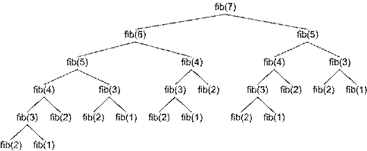

Настоящият текст е част от книгата на Светлин Наков и колектив:
Въведение в програмирането с Java
Можете да изтеглите цялата книга безплатно от www.introprogramming.info.
Настоящият текст е част от книгата на Светлин Наков и колектив:
Можете да изтеглите цялата книга безплатно от www.introprogramming.info.
Радослав Иванов
Светлин Наков
В настоящата тема ще се запознаем с рекурсията и нейните приложения. Рекурсията представлява мощна техника, при която един метод извиква сам себе си. С нея могат да се решават сложни комбинаторни задачи, при които с лекота могат да бъдат изчерпвани различни комбинаторни конфигурации. Ще ви покажем много примери за правилно и неправилно използване на рекурсия и ще ви убедим колко полезна може да е тя.
Рекурсията е програмна техника, чиято правилна употреба води до елегантни решения на определени проблеми. Понякога нейното използване може да опрости значително кода и да подобри четимостта му.
Един обект наричаме рекурсивен, ако съдържа себе си или е дефиниран чрез себе си.
Рекурсия е програмна техника, при която даден метод извиква сам себе си при решаването на определен проблем. Такива методи наричаме рекурсивни.
Нека разгледаме числата на Фибоначи. Това са членовете на следната редица:
1, 1, 2, 3, 5, 8, 13, 21, 34, 55, 89, 144, …
Всеки член на редицата се получава като сума на предходните два. Първите два члена по дефиниция са равни на 1, т.е. в сила е:
F1 = F2 = 1
Fi = Fi-1 + Fi-2 (за i > 2)
Изхождайки директно от дефиницията, можем да реализираме следния рекурсивен метод за намиране на n-тото число на Фибоначи:
|
public static long fib(int n) { if (n <= 2) return 1;
return fib(n - 1) + fib(n - 2); } |
Този пример ни показва, колко проста и естествена може да бъде реализацията на дадено решение с помощта на рекурсия.
От друга страна, той може да ни служи и като пример, колко трябва да сме внимателни при използването на рекурсия. Макар и интуитивно, текущото решение е един от класическите примери, когато използването на рекурсия е изключително неефективно, поради множеството изчисления (на едни и същи членове на редицата) в следствие на рекурсивните извиквания.
На предимствата и недостатъците от използване на рекурсия, ще се спрем в детайли малко по-късно в настоящата тема.
Когато в тялото на метод се извършва обръщение към същия метод, казваме, че методът е пряко рекурсивен.
Ако метод A се обръща към метод B, B към C, а С отново към А, казваме, че методът А, както и методите В и C са непряко (косвено) рекурсивни или взаимно-рекурсивни.
Веригата от извиквания при косвената рекурсия може да съдържа множество методи, както и разклонения, т.е. при наличие на едно условие се извиква един метод, а при различно условие се извиква друг.
Реализирайки рекурсия, трябва да сме сигурни, че след краен брой стъпки ще получим конкретен резултат. Затова трябва да имаме поне един случай, чието решение можем да намерим директно, без рекурсивно извикване. Тези случаи наричаме дъно на рекурсията.
В примера с числата на Фибоначи, дъното на рекурсията е случаят, когато n e по-малко или равно на 2. При него можем директно да върнем резултат, без да извършваме рекурсивни извиквания, тъй като по дефиниция първите два члена на редицата на Фибоначи са равни на 1.
Ако даден рекурсивен метод няма дъно на рекурсията, тя става безкрайна и резултатът е StackOverflowException.
Когато създаваме рекурсивни методи, трябва разбием задачата, която решаваме на подзадачи, за чието решение можем да използваме същия алгоритъм (рекурсивно).
Комбинирането на решенията на всички подзадачи, трябва да води до решение на изходната задача.
При всяко рекурсивно извикване, проблемната област трябва да се ограничава така, че в даден момент да достигнем дъното на рекурсията, т.е. всички подзадачи трябва да се стремят да достигнат дъното на рекурсията.
Използването на рекурсия ще илюстрираме с един класически пример – рекурсивно изчисляване на факториел.
Факториел от n (записва се n!) е произведението на естествените числа от 1 до n, като по дефиниция 0! = 1.
n! = 1.2.3…n
При създаването на нашето решение, много по-удобно е да използваме съответната рекурентна дефиниция на факториел:
n! = 1, при n = 0
n! = n.(n-1)! за n>0
Наличието на рекурентна зависимост не винаги е очевидно. Понякога се налага сами да я открием. В нашия случай можем да направим това, анализирайки проблема и пресмятайки стойностите на факториел за първите няколко естествени числа.
|
0! = 1 1! = 1 = 1.1 = 1.0! 2! = 2.1 = 2.1! 3! = 3.2.1 = 3.2! 4! = 4.3.2.1 = 4.3! 5! = 5.4.3.2.1 = 5.4! |
От тук лесно се вижда рекурентната зависимост:
|
n! = n.(n-1)! |
Дъното на нашата рекурсия е простият случай n = 0, когато стойността на факториел е 1.
В останалите случай, решаваме задачата за n-1 и умножаваме получения резултат по n. Така след краен брой стъпки, със сигурност ще достигнем дъното на рекурсията, понеже между 0 и n има краен брой естествени числа.
След като имаме налице тези ключови условия, можем да реализираме метод изчисляващ факториел.
|
public static long factorial(int n) { // The bottom of the recursion if (n == 0) { return 1; } // Recursive call: the method calls itself else { return n * factorial(n - 1); } } |
Използвайки този метод, можем да създадем приложение, което чете от конзолата цяло число, изчислява факториела му и отпечатва получената стойност:
|
RecursiveFactorial.java |
|
import java.util.Scanner;
public class RecursiveFactorial {
public static void main(String[] args) { Scanner input = new Scanner(System.in); System.out.print("n = "); int n = input.nextInt();
long factorial = factorial(n); System.out.printf("%d! = %d%n", n, factorial); input.close(); }
public static long factorial(int n) { // The bottom of the recursion if (n == 0) { return 1; } // Recursive call: the method calls itself else { return n * factorial(n - 1); } } } |
Ето какъв ще е резултатът от изпълнението на приложението, ако въведем 5 за стойност на n:
|
n = 5 5! = 120 |
Изчислението на факториел често се дава като пример при обяснението на понятието рекурсия, но в този случай, както и в редица други, рекурсията далеч не е най-добрия подход.
Често, ако е зададена рекурентна дефиниция на проблема, рекурентното решение е интуитивно и не представлява трудност, докато итеративно (последователно) решение не винаги е очевидно.
В конкретния случай, реализацията на итеративно решение е също толкова кратка, но по-ефективна:
|
public static long factorial(int n) { long result = 1;
for (int i = 1; i <= n; i++) { result = result * i; }
return result; } |
Предимствата и недостатъците при използването на рекурсия и итерация ще разгледаме малко по-нататък в настоящата тема.
Сага трябва да запомним, че преди да пристъпим към реализацията на рекурсивно решение, трябва да помислим и за итеративен вариант, след което да изберем по-доброто решение според конкретната ситуация.
Нека се спрем на още един пример, където можем да използваме рекурсия за решаване на проблема, като ще разгледаме и итеративно решение.
Често се налага да пишем вложени цикли. Когато те са два, три или друг предварително известен брой, това става лесно. Ако броят им, обаче, не е предварително известен, се налага да търсим алтернативен подход. Такъв е случаят в следващата задача.
Да се напише програма, която симулира изпълнението на N вложени цикъла от 1 до K, където N и K се въвеждат от потребителя. Резултатът от изпълнението на програмата, трябва да е еквивалентен на изпълнението на следния фрагмент:
|
for (a1 = 1; a1 <= K; a1++) for (a2 = 1; a2 <= K; a2++) for (a3 = 1; a3 <= K; a3++) ... for (aN = 1; aN <= K; aN++) System.out.printf("%d %d %d ... %d \n", a1, a2, a3, ... , aN); |
Например при N = 2 и K = 3 (което е еквивалентно на 2 вложени цикъла от 1 до 3) и при N = 3 и K = 3, резултатите трябва да са съответно:
|
1 1 1 1 1 1 2 1 1 2 1 3 1 1 3 N = 2 2 1 N = 3 1 2 1 K = 3 -> 2 2 K = 3 -> ... 2 3 3 2 3 3 1 3 3 1 3 2 3 3 2 3 3 3 3 3 |
Алгоритъмът за решаване на тази задача не е така очевиден, както в предния пример. Нека разгледаме две различни решения – едното рекурсивно, а другото итеративно.
Всеки ред от резултата, можем да разглеждаме като наредена последователност от N числа. Първото число представлява текущата стойност на брояча на първия цикъл, второто на втория и т.н. На всяка една позиция, можем да имаме стойност между 1 и K. Решението на нашата задача се свежда до намирането на всички наредени N-торки за дадени N и K.
Първият проблем, който се изправя пред нас е намирането на рекурентна зависимост. За тази цел, нека се вгледаме малко по-внимателно в примера от условието на задачата.
Забелязваме, че ако сме пресметнали решението за N = 2, то решението за N = 3 можем да получим, като поставим на първа позиция всяка една от стойностите на К (в случая от 1 до 3), а на останалите 2 позиции поставяме последователно всяка от двойките числа, получени от решението за N = 2. Можем да проверим, че това правило важи и при стойности на N по-големи от 3.
Така получаваме следната зависимост – започвайки от първа позиция, поставяме на текущата позиция всяка една от стойностите от 1 до К и продължаваме рекурсивно със следващата позиция. Това продължава, докато достигнем позиция N, след което отпечатваме получения резултат. Ето как изглежда и съответният метод на Java:
|
public static void nestedLoops(int currentLoop) { if (currentLoop == numberOfLoops) { printLoops(); return; }
for (int counter=1; counter<=numberOfIterations; counter++) { loops[currentLoop] = counter; nestedLoops(currentLoop + 1); } } |
Последователността от стойности ще пазим в масив наречен loops, който при нужда ще бъде отпечатван от метода printLoops().
Методът nestedLoops(…) има един параметър, указващ текущата позиция, на която ще поставяме стойности.
В цикъла, поставяме последователно на текущата позиция всяка една от възможните стойности (променливата numberOfIterations съдържа стойността на К въведена от потребителя), след което извикваме рекурсивно метода nestedLoops(…) за следващата позиция.
Дъното на рекурсията се достига, когато текущата позиция стане равна на N (променливата numberOfLoops съдържа стойността на N въведена от потребителя). В този момент имаме стойности на всички позиции и отпечатваме последователността.
Ето и цялостна реализация на решението:
|
RecursiveNestedLoops.java |
|
import java.util.Scanner;
public class RecursiveNestedLoops { public static int numberOfLoops; public static int numberOfIterations; public static int[] loops;
public static void main(String[] args) { Scanner input = new Scanner(System.in);
System.out.print("N = "); numberOfLoops = input.nextInt();
System.out.print("K = "); numberOfIterations = input.nextInt();
input.close();
loops = new int[numberOfLoops];
nestedLoops(0); }
public static void nestedLoops(int currentLoop) { if (currentLoop == numberOfLoops) { printLoops(); return; }
for (int counter=1;counter<=numberOfIterations;counter++) { loops[currentLoop] = counter; nestedLoops(currentLoop + 1); } }
public static void printLoops() { for (int i = 0; i < numberOfLoops; i++) { System.out.printf("%d ", loops[i]); } System.out.println(); } } |
Ако стартираме приложението и въведем за стойности на N и К съответно 2 и 4, ще получим следния резултат:
|
N = 2 K = 4 1 1 1 2 1 3 1 4 2 1 2 2 2 3 2 4 3 1 3 2 3 3 3 4 4 1 4 2 4 3 4 4 |
В метода main(…) въвеждаме стойности за N и К, създаваме масива, в който ще пазим последователността от стойности, след което извикваме метода nestedLoops(…), започвайки от първа позиция.
Забележете, че като параметър на метода подаваме 0, понеже пазим последователността от стойности в масив, а както вече знаем, номерацията на елементите в масив започва от 0.
Методът printLoops() обхожда всички елементи на масива и ги отпечатва на конзолата.
За реализацията на итеративно решение, можем да използваме следния алгоритъм, който на всяка итерация намира следващата последователност от числа и я отпечатва:
1. В начално състояние на всички позиции поставяме числото 1.
2. Отпечатваме текущата последователност от числа.
3. Увеличаваме с единица числото намиращо се на позиция N. Ако получената стойност е по-голяма от К, заменяме я с 1 и увеличаваме с единица стойността на позиция N-1. Ако и нейната стойност е станала по-голяма от К, също я заменяме с 1 и увеличаваме с единица стойността на позиция N-2 и т.н.
4. Ако стойността на първа позиция, е станала по-голяма от К, алгоритъмът приключва работа.
5. Преминаваме към стъпка 2.
Следва примерна реализация на описания алгоритъм:
|
IterativeNestedLoops.java |
|
import java.util.Scanner;
public class IterativeNestedLoops { public static int numberOfLoops; public static int numberOfIterations; public static int[] loops;
public static void main(String[] args) { Scanner input = new Scanner(System.in);
System.out.print("N = "); numberOfLoops = input.nextInt();
System.out.print("K = "); numberOfIterations = input.nextInt();
input.close();
loops = new int[numberOfLoops];
nestedLoops(); }
public static void nestedLoops() { initLoops();
int currentPosition;
while (true) { printLoops();
currentPosition = numberOfLoops - 1; loops[currentPosition] = loops[currentPosition] + 1;
while (loops[currentPosition] > numberOfIterations) { loops[currentPosition] = 1; currentPosition--;
if (currentPosition < 0) { return; } loops[currentPosition] = loops[currentPosition] + 1; } } }
public static void initLoops() { for (int i = 0; i < numberOfLoops; i++) { loops[i] = 1; } }
public static void printLoops() { for (int i = 0; i < numberOfLoops; i++) { System.out.printf("%d ", loops[i]); } System.out.println(); } } |
Методите main(…) и printLoops() са същите, както в реализацията на рекурсивното решение.
Различен е метода nestedLoops(), който сега реализира алгоритъма за итеративно решаване на проблема и поради това не приема параметър, както в рекурсивния вариант.
В самото начало на този метод извикваме метода initLoops(), който обхожда елементите на масива и поставя на всички позиции единици.
Стъпките на алгоритъма реализираме в безкраен цикъл, от който ще излезем в подходящ момент, прекратявайки изпълнението на метода чрез оператора return.
Интересен е начинът, по който реализираме стъпка 3 от алгоритъма. Проверката за стойности по-големи от К, заменянето им с единица и увеличаването на стойността на предходна позиция (след което правим същата проверка и за нея), реализираме с помощта на един while цикъл, в който влизаме само ако стойността е по-голяма от К.
За целта първо заменяме стойността на текущата позиция с единица. След това текуща става позицията преди нея. После увеличаваме стойността на новата позиция с единица и се връщаме в началото на цикъла. Тези действия продължават, докато стойността на текуща позиция не се окаже по-малка или равна на К (променливата numberOfIterations съдържа стойността на К), при което излизаме от цикъла.
В момента, когато на първа позиция стойността стане по-голяма от К (това е моментът, когато трябва да приключим изпълнението), на нейно място поставяме единица и опитваме да увеличим стойността на предходната позиция. В този момент стойността на променливата currentPosition става отрицателна (понеже първата позиция в масив е 0), при което прекратяваме изпълнението на метода чрез оператора return. С това задачата ни е изпълнена.
Когато алгоритъмът за решаване на даден проблем е рекурсивен, реализирането на рекурсивно решение, може да бъде много по-четливо и елегантно от реализирането на итеративно решение на същия проблем.
Понякога дефинирането на еквивалентен итеративен алгоритъм е значително по-трудно и не е лесно да се докаже, че двата алгоритъма са еквивалентни.
В определени случаи, чрез използването на рекурсия, можем да постигнем много по-прости, кратки и лесни за разбиране решения.
От друга страна, рекурсивните извиквания, може да консумират много повече ресурси и памет. При всяко рекурсивно извикване, в стека се заделя нова памет за аргументите, локалните променливи и връщаните резултати. При прекалено много рекурсивни извиквания може да се получи препълване на стека, поради недостиг на памет.
В дадени ситуации рекурсивните решения може да са много по-трудни за разбиране и проследяване от съответните итеративни решения.
Рекурсията е мощна програмна техника, но трябва внимателно да преценяваме, преди да я използваме. При неправилна употреба, тя може да доведе до неефективни и трудни за разбиране и поддръжка решения.
Ако чрез използването на рекурсия, постигаме по-просто, кратко и по-лесно за разбиране решение, като това не е за сметка на ефективността и не предизвиква други странични ефекти, тогава можем да предпочетем рекурсивното решение. В противен случай, е добре да помислим дали не е по-подходящо да използваме итерация.
Нека се върнем отново към примера с намирането на n-тото число на Фибоначи и да разгледаме по-подробно рекурсивното решение:
|
public static long fib(int n) { if (n <= 2) { return 1; } return fib(n - 1) + fib(n - 2); } |
Това решение е интуитивно, кратко и лесно за разбиране. На пръв поглед изглежда, че това е чудесен пример за приложение на рекурсията. Истината е, че това е един от класическите примери за неподходящо използване на рекурсия. Нека стартираме следното приложение:
|
RecursiveFibonacci.java |
|
import java.util.Scanner;
public class RecursiveFibonacci { public static void main(String[] args) { Scanner input = new Scanner(System.in); System.out.print("n = "); int n = input.nextInt();
long result = fib(n); System.out.printf("F%d = %d%n", n, result); input.close(); }
public static long fib(int n) { if (n <= 2) { return 1; } return fib(n - 1) + fib(n - 2); } } |
Ако зададем като стойност n = 100, изчисленията ще отнемат много дълго време (едва ли някой ще изчака толкова дълго, че да види резултата). Причината за това е, че подобна реализация е изключително неефективна. Всяко рекурсивно извикване води след себе си още две, при което дървото на извикванията расте експоненциално, както е показано на фигурата:

Броят на стъпките за изчисление на fib(100) е от порядъка на 1.6 на степен 100 (това се доказва математически), докато при линейно решение е само 100.
Проблемът произлиза от това, че се правят напълно излишни изчисления. Много от членовете на редицата се пресмятат многократно.
Можем да оптимизираме рекурсивния метод за изчисление на числата на Фибоначи, като записваме вече пресметнатите числа в масив и извършваме рекурсивно извикване само ако числото, което пресмятаме, не е било все до пресметнато до момента. Благодарение на тази малка оптимизация, рекурсивното решение ще работи с линейна сложност. Ето примерна реализация:
|
RecursiveFibonacciMemoization.java |
|
import java.util.Scanner;
public class RecursiveFibonacciMemoization { public static long[] numbers;
public static void main(String[] args) { Scanner input = new Scanner(System.in); System.out.print("n = "); int n = input.nextInt();
numbers = new long[n + 2]; numbers[1] = 1; numbers[2] = 1;
long result = fib(n); System.out.printf("F%d = %d%n", n, result); input.close(); }
public static long fib(int n) { if (0 == numbers[n]) { numbers[n] = fib(n - 1) + fib(n - 2); }
return numbers[n]; } } |
Забелязвате ли разликата? Докато при първоначалния вариант, при n = 100, ни се струва, че изчисленията продължават безкрайно дълго, при оптимизираното решение, получаваме отговор мигновено.
Не е трудно да забележим, че можем да решим проблема и без използването на рекурсия, пресмятайки числата на Фибоначи последователно. За целта ще пазим само последните два пресметнати члена на редицата и чрез тях ще получаваме следващия. Следва реализация на итеративния алгоритъм:
|
IterativeFibonacci.java |
|
import java.util.Scanner;
public class IterativeFibonacci { public static void main(String[] args) { Scanner input = new Scanner(System.in); System.out.print("n = "); int n = input.nextInt();
long result = fib(n); System.out.printf("F%d = %d%n", n, result); input.close(); }
public static long fib(int n) { long fn = 1; long fn_1 = 1; long fn_2 = 1;
for (int i = 2; i < n; i++) { fn = fn_1 + fn_2;
fn_2 = fn_1; fn_1 = fn; }
return fn; } } |
Това решение е също толкова кратко и елегантно, но не крие рисковете от използването на рекурсия. Освен това то е ефективно и не изисква допълнителна памет.
Изхождайки от горните примери, можем да дадем следната препоръка:
|
|
Избягвайте рекурсията, освен, ако не сте сигурни как работи тя и какво точно се случва зад кулисите. Рекурсията е голямо и мощно оръжие, с което лесно можете да се застреляте в крака. Ползвайте я внимателно! |
Ако следваме това правило, ще намалим значително вероятността за неправилно използване на рекурсия и последствията, произтичащи от него.
По принцип, когато имаме линеен изчислителен процес, не трябва да използваме рекурсия, защото итерацията може да се реализира изключително лесно и води до прости и ефективни изчисления. Пример за линеен изчислителен процес е изчислението на факториел. При него изчисляваме членовете на редица, в която всеки следващ член зависи единствено от предходните.
Линейните изчислителни процеси се характеризират с това, че на всяка стъпка от изчисленията рекурсията се извиква еднократно, само в една посока. Схематично линейният изчислителен процес можем да опишем така:
|
void recursion(parameters) { do some calculations; recursion(some parameters); do some calculations; } |
При такъв процес, когато имаме само едно рекурсивно извикване с тялото на рекурсивния метод, не е нужно да ползваме рекурсия, защото итерацията е очевидна.
Понякога, обаче имаме разклинен или дървовиден изчислителен процес. Например имитацията на N вложени цикъла не може лесно да се замени с итерация. Вероятно сте забелязали, че нашият итеративен алгоритъм, който имитира вложените цикли работи на абсолютно различен принцип. Опитайте да реализирате същото поведение без рекурсия и ще се убедите, че не е лесно.
По принцип всяка рекурсия може да се сведе до итерация чрез използване на стек на извикванията (какъвто се създава по време на изпълнение на програмата), но това е сложно и от него няма никаква полза. Рекурсията трябва да се ползва, когато дава просто, лесно за разбиране и ефективно решение на даден проблем, за който няма очевидно итеративно решение.
При дървовидните изчислителни процеси на всяка стъпка от рекурсията, се извършват няколко на брой рекурсивни извиквания и схемата на извършване на изчисленията може да се визуализира като дърво (а не като списък, както при линейните изчисления). Например при изчислението на числата на Фибоначи видяхме какво дърво на рекурсивните извиквания се получава.
Типичната схема на дървовидния изчислителен процес можем да опишем чрез псевдокод така:
|
void recursion(parameters) { do some calculations; recursion(some parameters); ... recursion(some other parameters); do some calculations; } |
Дървовидните изчислителни процеси не могат директно да бъдат сведени до рекурсивни (за разлика от линейните). Случаят с числата на Фибоначи е простичък, защото всяко следващо число се изчислява чрез предходните, които можем да изчислим предварително. Понякога, обаче всяко следващо число се изчислява не само чрез предходните, а и чрез следващите и рекурсивната зависимост не е толкова проста. В такъв случай рекурсията се оказва особено ефективна.
Ще илюстрираме последното твърдение с един класически пример.
Даден е лабиринт, който има правоъгълна форма и се състои от N*M квадратчета. Всяко квадратче е или проходимо, или не е проходимо. Търсач на приключения влиза в лабиринта от горния му ляв ъгъл (там е входът) и трябва да стигне до долния десен ъгъл на лабиринта (там е изходът). Търсачът на приключения може на всеки ход да се премести с една позиция нагоре, надолу, наляво или надясно, като няма право да излиза извън границите на от лабиринта и няма право да стъпва върху непроходими квадратчета. Преминаването през една и съща позиция повече от веднъж също е забранено (счита се, че търсачът на приключения се е загубил, ако се върне след няколко хода на място, където вече е бил). Да се напише компютърна програма, която отпечатва всички възможни пътища от началото до края на лабиринта.
Това е типичен пример за задача, която може лесно да се реши с рекурсия, докато с итерация решението е по-сложно и по-трудно за реализация.
Нека първо си нарисуваме един пример, за да си представим условието на задачата и да помислим за решение:
|
s |
|
|
|
|
|
|
|
|
|
|
|
|
|
|
|
|
|
|
|
|
|
|
|
|
|
|
|
|
|
|
|
|
|
|
|
|
|
e |
Видно е, че има 3 различни пътя от началната позиция до крайната, които отговарят на изискванията на задачата (движение само по празни квадратчета и без преминаване по два пъти през никое от тях). Ето как изглеждат въпросните 3 пътя:
|
|
|
На фигурата по-горе с числата от 1 до 14 е означен номерът на съответната стъпка от пътя.
Как да решим задачата? Можем да разгледаме търсенето на дадена позиция в лабиринта до края на лабиринта като рекурсивен процес по следния начин:
- Нека текущата позиция в лабиринта е (row, col). В началото тръгваме от стартовата позиция (0,0).
- Ако текущата позиция e търсената позиция (N-1, M-1), то сме намерили път и трябва да го отпечатаме.
- Ако текущата позиция е непроходима, връщаме се назад (нямаме право да стъпваме в нея).
- Ако текущата позиция е вече посетена, връщаме се назад (нямаме право да стъпваме втори път в нея).
- В противен случай търсим път в четирите възможни посоки. Търсим рекурсивно (със същия алгоритъм) път към изхода на лабиринта като опитваме да ходим във всички възможни посоки:
o Опитваме наляво: позиция (row, col-1).
o Опитваме нагоре: позиция (row-1, col).
o Опитваме надясно: позиция (row, col+1).
o Опитваме надолу: позиция (row+1, col).
За да стигнем до този алгоритъм, разсъждаваме рекурсивно. Имаме задачата "търсене на път от дадена позиция до изхода". Тя може да се сведе до 4 подзадачи:
- търсене на път от позицията вляво от текущата до изхода;
- търсене на път от позицията нагоре от текущата до изхода;
- търсене на път от позицията вдясно от текущата до изхода;
- търсене на път от позицията надолу от текущата до изхода.
Ако от всяка възможно позиция, до която достигнем, проверим четирите възможни посоки и не се въртим в кръг (избягваме преминаване през позиция, на която вече сме били), би трябвало рано или късно да намерим изхода (ако съществува път към него).
Този път рекурсията не е толкова проста, както при предните задачи. На всяка стъпка трябва да проверим дали не сме стигнали изхода и дали не стъпваме в забранена позиция, след това трябва да отбележим позицията като посетена и да извикаме рекурсивното търсене на път в четирите посоки. След връщане от рекурсивните извиквания, трябва да отбележим обратно като непосетена позицията, от която се оттегляме. Такова обхождане е известно в информатиката като търсене с връщане назад (backtracking).
За реализацията на алгоритъма ще ни е необходимо представяне на лабиринта. Ще ползваме двумерен масив от символи, като в него всяко ще означим със символа ' ' (интервал) проходимите позиции, с 'e' изхода от лабиринта и с '*' непроходимите полета. Стартовата позиция ще означим като празна. Позициите, през които сме минали, ще означим със символа 's'. Ето как ще изглежда дефиницията на лабиринта за нашия пример:
|
private static char[][] lab = { {' ', ' ', ' ', '*', ' ', ' ', ' '}, {'*', '*', ' ', '*', ' ', '*', ' '}, {' ', ' ', ' ', ' ', ' ', ' ', ' '}, {' ', '*', '*', '*', '*', '*', ' '}, {' ', ' ', ' ', ' ', ' ', ' ', 'е'}, }; |
Нека се опитаме да реализираме рекурсивния метод за търсене в лабиринт. Той трябва да бъде нещо такова:
|
private static char[][] lab = { {' ', ' ', ' ', '*', ' ', ' ', ' '}, {'*', '*', ' ', '*', ' ', '*', ' '}, {' ', ' ', ' ', ' ', ' ', ' ', ' '}, {' ', '*', '*', '*', '*', '*', ' '}, {' ', ' ', ' ', ' ', ' ', ' ', 'е'}, };
private static void findPath(int row, int col) { if ((col<0) || (row<0) || (col>=lab[0].length) || (row >= lab.length)) { // We are out of the labyrinth return; }
// Check if we have found the exit if (lab[row][col] == 'е') { System.out.println("Found the exit!"); }
if (lab[row][col] != ' ') { // The current cell is not free return; }
// Mark the current cell as visited lab[row][col] = 's';
// Invoke recursion the explore all possible directions findPath(row, col-1); // left findPath(row-1, col); // up findPath(row, col+1); // right findPath(row+1, col); // down
// Mark back the current cell as free lab[row][col] = ' '; }
public static void main(String[] args) { findPath(0, 0); } |
Имплементацията стриктно следва описанието, дадено по-горе. В случая размерът на лабиринта не е записан в променливи N и M, а е се извлича от двумерния масив, съхраняващ лабиринта: броят колони е lab[0]. length, а броят редове е lab.length (помислете защо!).
При влизане в рекурсивния метод за търсене първо се проверява дали няма излизане извън лабиринта. Ако има търсенето от текущата позиция нататък се прекратява, защото е забранено излизане извън границите на лабиринта.
След това се проверява дали не сме намерили изхода. Ако сме го намерили, се отпечатва подходящо съобщение и търсенето от текущата позиция нататък приключва.
След това се проверява дали е свободна текущата клетка. Клетката е свободна, ако е проходима и не сме били на нея при някоя от предните стъпки (ако не е част от текущия път от стартовата позиция до текущата клетка на лабиринта).
При свободна клетка, стъпваме в нея. Означаваме клетката като заета (със символа 's'). След това рекурсивно търсим път в четирите възможни посоки. След като се върнем от рекурсивното проучване на четирите възможни посоки, отстъпваме назад от текущата клетка и я маркираме като отново като свободна (връщаме се назад).
Маркирането на текущата клетка като свободна при излизане от рекурсията е важно, защото при връщане назад тя вече не е част от текущия път. Ако пропуснем това действие, няма да намерим всички пътища до изхода, а само някои от тях.
Така изглежда рекурсивният метод за търсене на изхода в лабиринта. Остава само да го извикаме от main() метода, започвайки търсенето на пътя от началната позиция (0, 0).
Ако стартираме програмата, ще видим следния изход:
|
Found the exit! Found the exit! Found the exit! |
Вижда се, че изходът е бил намерен точно 3 пъти. Изглежда алгоритъмът работи коректно. Липсва ни обаче отпечатването на самия път като последователност от позиции, през които преминаваме.
За да можем да отпечатаме пътищата, които намираме с нашия рекурсивен алгоритъм, можем да използваме масив, в който при всяко придвижване да пазим посоката, която сме поели (L – наляво, U – нагоре, R – надясно, D – надолу). Този масив ще съдържа във всеки един момент текущия път от началото на лабиринта до текущата позиция.
Ще ни трябва един масив от символи и един брояч на стъпките, които сме направили. Броячът ще пази колко пъти сме се придвижили към следваща позиция рекурсивно, т.е. текущата дълбочина на рекурсията.
За да работи всичко коректно, е необходимо преди влизане в рекурсия да увеличаваме брояча и да запазваме посоката, която сме поели в текущата позиция от масива, а при връщане от рекурсията да намаляваме брояча. При намиране на изхода можем да отпечатаме пътя (всички символи от масива от 0 до позицията, която броячът сочи.
Колко голяма да бъде масивът? Отговорът на този въпрос е лесен; понеже в една клетка можем да влезем най-много веднъж, то никога пътят няма да е по-дълъг от общия брой клетки в лабиринта (N*M). В нашия случай размерът е 7*5, т.е. масивът е достатъчно да има 35 позиции.
Следва една примерна имплементация на описаната идея:
|
private static char[][] lab = { {' ', ' ', ' ', '*', ' ', ' ', ' '}, {'*', '*', ' ', '*', ' ', '*', ' '}, {' ', ' ', ' ', ' ', ' ', ' ', ' '}, {' ', '*', '*', '*', '*', '*', ' '}, {' ', ' ', ' ', ' ', ' ', ' ', 'е'}, };
private static char[] path = new char[lab[0].length * lab.length]; private static int position = 0;
private static void findPath(int row, int col, char direction) { if ((col<0) || (row<0) || (col>=lab[0].length) || (row >= lab.length)) { // We are out of the labyrinth return; }
// Append the direction to the path path[position] = direction; position++;
// Check if we have found the exit if (lab[row][col] == 'е') { printPath(path, 1, position-1); }
if (lab[row][col] == ' ') { // The current cell is free. Mark it as visited lab[row][col] = 's';
// Invoke recursion the explore all possible directions findPath(row, col-1, 'L'); // left findPath(row-1, col, 'U'); // up findPath(row, col+1, 'R'); // right findPath(row+1, col, 'D'); // down
// Mark back the current cell as free lab[row][col] = ' '; }
// Remove the direction from the path position--; }
private static void printPath( char[] path, int startPos, int endPos) { System.out.print("Found path to the exit: "); for (int pos = startPos; pos<=endPos; pos++) { System.out.print(path[pos]); } System.out.println(); }
public static void main(String[] args) { findPath(0, 0, 'S'); } |
За леснота добавихме още един параметър на рекурсивния метод за търсене на път до изхода от лабиринта: посока, в която сме поели, за да дойдем на текущата позиция. Този параметър няма смисъл при първоначалното започване от стартовата позиция и затова в началото слагаме за посока някаква безсмислена стойност 'S'. След това при отпечатването пропускаме първия елемент от пътя.
Ако стартираме програмата, ще получим трите възможни пътя от началото до края на лабиринта:
|
Found path to the exit: RRDDLLDDRRRRRR Found path to the exit: RRDDRRUURRDDDD Found path to the exit: RRDDRRRRDD |
Изглежда алгоритъмът работи. Остава да го тестваме още малко примери, за да се убедим, че не сме допуснали някоя глупава грешка. Може да пробваме примерно с празен лабиринт с размер 1 на 1, с празен лабиринт с размер 3 на 3 и примерно с лабиринт, в който не съществува път до изхода, и накрая с огромен лабиринт, където пътищата са наистина много.
Ако изпълним тестовете, ще се убедим, че във всеки от тези необичайни случаи програмата работи коректно.
Примерен вход (лабиринт 1 на 1):
|
private static char[][] lab = { {'e'}, }; |
Примерен изход:
|
Found path to the exit: |
Вижда се, че изходът е коректен, но пътят е с дължина 0, тъй като стартовата позиция съвпада с изхода. Бихме могли да визуализацията в този случай (примерно да отпечатваме "empty path").
Примерен вход (празен лабиринт 3 на 3):
|
private static char[][] lab = { {' ', ' ', ' '}, {' ', ' ', ' '}, {' ', ' ', 'e'}, }; |
Примерен изход:
|
Found path to the exit: RRDLLDRR Found path to the exit: RRDLDR Found path to the exit: RRDD Found path to the exit: RDLDRR Found path to the exit: RDRD Found path to the exit: RDDR Found path to the exit: DRURDD Found path to the exit: DRRD Found path to the exit: DRDR Found path to the exit: DDRUURDD Found path to the exit: DDRURD Found path to the exit: DDRR |
Вижда се, че изходът е коректен – това са всички пътища до изхода.
Примерен вход (лабиринт 5 на 3 без път до изхода):
|
private static char[][] lab = { {' ', '*', '*', ' ', ' '}, {' ', ' ', ' ', '*', ' '}, {'*', ' ', ' ', '*', 'e'}, }; |
Примерен изход:
|
(няма изход) |
Вижда се, че изходът е коректен, но отново бихме могли да добавим по-приятелско съобщения (примерно "No exit!") вместо липса на какъвто и да е изход.
Сега остана да проверим какво се случва, когато имаме голям лабиринт. Ето примерен вход (лабиринт с размер 15 на 9):
|
private static char[][] lab = { {' ','*',' ',' ',' ',' ','*',' ',' ',' ',' ','*','*',' ',' '}, {' ',' ','*',' ',' ',' ',' ',' ',' ',' ',' ',' ',' ',' ',' '}, {' ',' ',' ',' ',' ',' ',' ',' ',' ',' ',' ',' ',' ',' ',' '}, {' ',' ',' ',' ',' ',' ','*',' ',' ',' ',' ',' ',' ',' ',' '}, {' ',' ',' ',' ',' ','*',' ',' ',' ',' ',' ',' ',' ',' ',' '}, {' ',' ',' ',' ',' ','*',' ',' ',' ',' ',' ',' ',' ',' ',' '}, {' ','*','*','*',' ','*',' ',' ',' ',' ',' ','*','*','*','*'}, {' ',' ',' ',' ',' ','*',' ',' ',' ',' ',' ',' ',' ',' ',' '}, {' ',' ',' ',' ',' ','*',' ',' ',' ',' ',' ',' ',' ',' ','е'}, }; |
Стартираме програмата и тя започва да печата непрекъснато пътища до изхода, но не свършва, защото пътищата са прекалено много. Ето как изглежда една малка част от изхода:
|
Found path to the exit: DRDLDRRURUURRDLDRRURURRRDLLDLDRRURRURRURDDLLDLLDLLLDRRDLDRDRRURDRR Found path to the exit: DRDLDRRURUURRDLDRRURURRRDLLDLDRRURRURRURDDLLDLLDLLLDRRDLDRDRRRURRD Found path to the exit: DRDLDRRURUURRDLDRRURURRRDLLDLDRRURRURRURDDLLDLLDLLLDRRDLDRDRRRURDR ... |
Сега, нека пробваме един последен пример – лабиринт с голям размер (15 на 9, в който не съществува път до изхода:
|
private static char[][] lab = { {' ','*',' ',' ',' ',' ','*',' ',' ',' ',' ','*','*',' ',' '}, {' ',' ','*',' ',' ',' ',' ',' ',' ',' ',' ',' ',' ',' ',' '}, {' ',' ',' ',' ',' ',' ',' ',' ',' ',' ',' ',' ',' ',' ',' '}, {' ',' ',' ',' ',' ',' ','*',' ',' ',' ',' ',' ',' ',' ',' '}, {' ',' ',' ',' ',' ','*',' ',' ',' ',' ',' ',' ',' ',' ',' '}, {' ',' ',' ',' ',' ','*',' ',' ',' ',' ',' ',' ',' ',' ',' '}, {' ','*','*','*',' ','*',' ',' ',' ',' ',' ','*','*','*','*'}, {' ',' ',' ',' ',' ','*',' ',' ',' ',' ',' ','*','*',' ',' '}, {' ',' ',' ',' ',' ','*',' ',' ',' ',' ',' ',' ',' ','*','е'}, }; |
Стартираме програмата и тя заспива, без да отпечата нищо. Всъщност работи прекалено дълго, за да я изчакаме. Изглежда имаме проблем.
Какъв е проблемът? Проблемът е, че възможните пътища, които алгоритъмът анализира, са прекалено много и това отнема прекалено много време. Да помислим колко се тези пътища. Ако средно един път до изхода е 20 стъпки и ако на всяка стъпка имаме 4 възможни посоки за продължение, то би трябвало да анализираме 420 възможни пътя, което е ужасно голямо число. Тази оценка на броя възможности е изключително неточна, но дава ориентация за какъв порядък възможности става дума.
Какъв е изводът? Изводът е, че методът "търсене с връщане назад" не работи, когато вариантите са прекалено много, а фактът, че са прекалено много лесно може да се установи.
Няма да ви мъчим с опити да измислите решение на задачата. Проблемът за намиране на всички пътища в лабиринт няма ефективно решение при големи лабиринти.
Задачата има решение, ако бъде формулирана по друг начин: да се намери поне един изход от лабиринта. Тази задача е далеч по-лесна и може да се реши с една много малка промяна в примерния код: при връщане от рекурсията текущата позиция да не се маркира обратно като свободна. Това означава да изтрием следните редове код:
|
// Mark back the current cell as free lab[row][col] = ' '; |
Можем да се убедим, че след тази промяна, програмата много бързо установява, ако в лабиринта няма път до изхода, а ако има много бързо намира един от пътищата (произволен).
Какъв е генералният извод от задачата за търсене на път в лабиринт? Изводът вече го формулирахме: ако не разбирате как работи рекурсията, избягвайте да я ползвате! Внимавайте, когато пишете рекурсивен код. Рекурсията е много мощен метод за решаване на комбинаторни задачи (задачи, в които изчерпваме варианти), но не е за всеки. Можете много лесно да сгрешите. Лесно можете да накарате програмата да "зависне" или да препълните стека с бездънна рекурсия. Винаги търсете итеративните решения, освен, ако не разбирате в голяма дълбочина как да ползвате рекурсията!
Колкото до задачата за търсене на най-къс път в лабиринт, можете да я решите елегантно без рекурсия с т.нар. метод на вълната, известен още като BFS (breadth-first search), който се реализира елементарно с една опашка. Повече за алгоритъма "BFS" можете да прочетете на неговата страница в Уикипедия: http://en.wikipedia.org/wiki/Breadth-first_search.
1. Напишете програма, която генерира и отпечатва всички комбинации с повторение на k елемента над n-елементно множество.
Примерен вход:
|
n = 3 к = 2 |
Примерен изход:
|
(1 1), (1 2), (1 3), (2 2), (2 3), (3 3) |
2. Напишете програма, която генерира всички вариации с повторение на n елемента от k-ти клас.
Примерен вход:
|
n = 3 к = 2 |
Примерен изход:
|
(1 1), (1 2), (1 3), (2 1), (2 2), (2 3), (3 1), (3 2), (3 3) |
3. Нека е дадено множество от символни низове. Да се напише програма, която генерира всички подмножества съставено от k на брой символни низа, избрани измежду елементите на това множество.
Примерен вход:
|
strings = {'test', 'rock', 'fun'} k = 2 |
Примерен изход:
|
(test rock), (test fun), (rock fun) |
4. Напишете програма, която отпечатва всички подмножества на дадено множество от думи.
Примерен вход:
|
words = {'test', 'rock', 'fun'} |
Примерен изход:
|
(), (test), (rock), (fun), (test rock), (test fun), (rock fun), (test rock fun) |
5. Реализирайте алгоритъма "сортиране чрез сливане" (merge-sort). При него началният масив се разделя на две равни по големина части, които се сортират (чрез merge-sort) и след това двете сортирани части се сливат, за да се получи целият масив в сортиран вид.
6. Напишете програма, която генерира и отпечатва пермутациите на числата 1, 2, …, n, за дадено цяло число n.
Примерен вход:
|
n = 3 |
Примерен изход:
|
(1, 2, 3), (1, 3, 2), (2, 1, 3), (2, 3, 1), (3, 1, 2), (3, 2, 1) |
7. Даден е масив с цели числа и число N. Напишете програма, която намира всички подмножества от числа от масива, които имат сума N.
8. Даден е масив с цели числа. Напишете програма, която проверява дали в масива съществуват едно или повече числа, чиято сума е N.
9. Реализирайте BFS алгоритъма за търсене на най-кратък път в лабиринт.
1. Използвайте имитация на вложени цикли.
2. Използвайте имитация на вложени цикли.
3. Нека низовете са N на брой. Използвайте имитация на вложени цикли. Трябва да генерирате всички множества от k елемента в диапазона [0...N-1]. За всяко такова множество разглеждате числата от него като индекси в масива със символните низове и отпечатвате за всяко число съответния низ. За горния пример {0, 2} означава нулевата и втората дума, т.е. (test, fun).
4. Можете да използвате предходната задача и да генерирате празното множество, следвано от всички подмножества с 1 елемент, всички подмножества с 2 елемента, всички множества с 3 елемента и т.н.
Задачата има и по-хитро решение: завъртате цикъл от 0 до 2N-1 и преобразувате всяко от тези числа в двоична бройна система. За N=3 имате следните двоични представяния на числата 0 до 2N-1:
|
000, 001, 010, 011, 100, 101, 110, 111 |
Сега за всяко двоично представяне взимате тези думи от множеството символни низове, за които имаме единица на съответната позиция в двоичното представяне. Примерно за двоичното представяне "101" взимаме първия и последния низ (там имаме единици) и пропускаме втория низ (там имаме нула). Хитро, нали?
5. Ако се затрудните, потърсете "merge sort" в Интернет. Ще намерите стотици имплементации.
6. Да предположим, че методът perm(k) пермутира по всички възможни начини елементите от масив p[] на позиции от 0 до k включително. В масива p първоначално записваме числата от 1 до N. Можем да реализираме рекурсивно perm(k+1) по следния начин:
a. Разменяме p[i] с p[k].
b. Извикваме рекурсия: perm(k-1).
c. Разменяме обратно p[i] с p[k].
В началото започваме с perm(N-1).
7. Задачата не се различава съществено от задачата за намиране на всички подмножества измежду даден списък със символни низове. Помислете ще работи ли бързо програмата при 500 числа?
8. Ако подходите към проблема по метода на изчерпването на всички възможности, решението няма да работи при повече от 20-30 елемента. Затова може да подходите по съвсем различен начин.
Нека имаме масива с числа p[]. Нека означим с possible(k, sum) дали можем да получим сума sum като използваме само числата p[0], p[1], ..., p[k]. Тогава са в сила следните рекурентни зависимости:
- possible(0, sum) = true, точно когато p[0] == sum
- possible(k, sum) = true, точно когато possible[k-1, sum] == true или possible[k-1, sum-p[k]] == true
Горната формула показва, че можем да получим сума sum от елементите на масива на позиции от 0 до k, ако едно от двете е в сила:
- Елементът p[k] не участва в сумата sum и тя се получава по някакъв начин от останалите елементи (от 0 до k-1);
- Елементът p[k] участва в сумата sum, а остатъкът sum-p[k] се получава по някакъв начин от останалите елементи (от 0 до k-1).
Реализацията не е сложна, но не трябва да внимавате и да не позволявате вече сметната стойност от двумерния масив possibe[][] да се смята повторно. Иначе алгоритъмът няма да работи при над 20-30 елемента.
9. Прочетете статията в Уикипедия: http://en.wikipedia.org/wiki/Breadth-first_search. Там има достатъчно обяснения за BFS и примерен код.